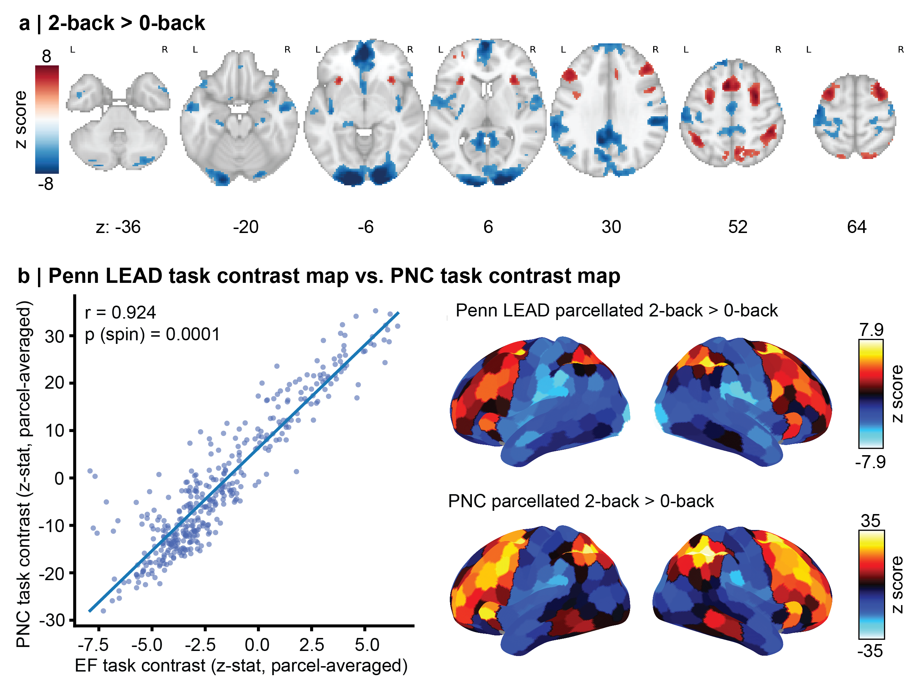
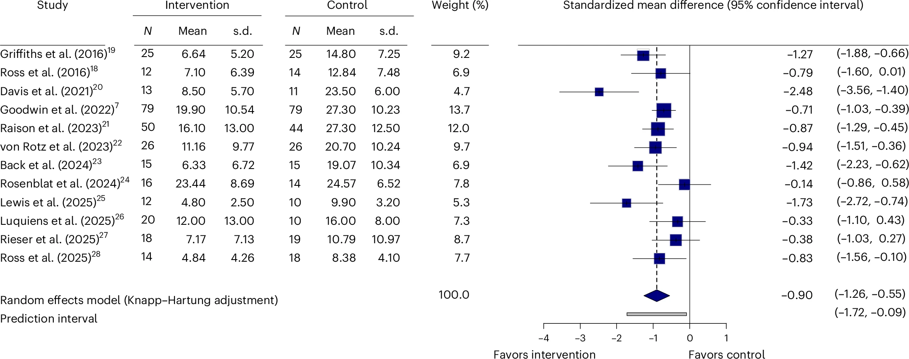
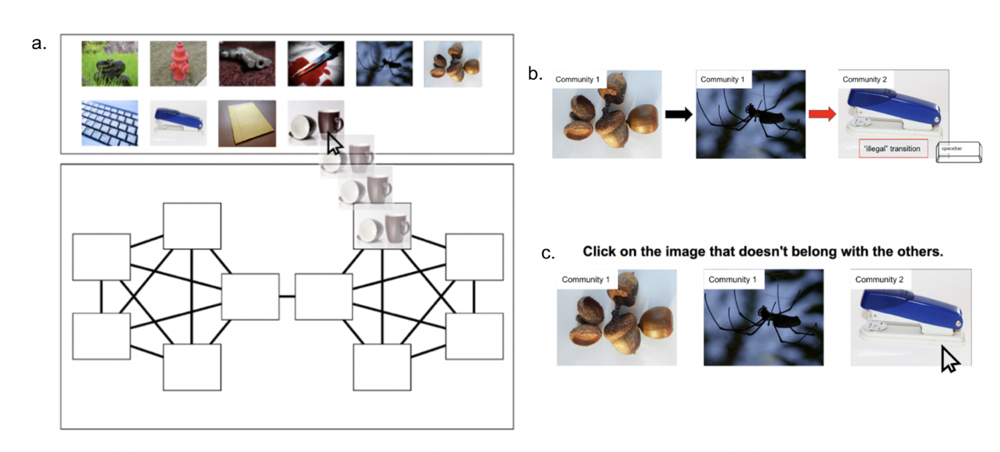

A longitudinal brain resource to study brain development and transdiagnostic variation in executive function

Brooke L. Sevchik, Golia Shafiei, Kristin Murtha, Sophia Linguiti, Lia Brodrick, Juliette B.H. Brook, Matt Cieslak, Elizabeth Flook, Kahini Mehta, Steven L. Meisler, Kosha Ruparel, Sage Rush, Taylor Salo, S. Parker Singleton, Tien T. Tong, Mrugank Salunke, Dani S. Bassett, Monica E. Calkins, Mark A. Elliott, Raquel E. Gur, Ruben C. Gur, Tyler M. Moore, J. Cobb Scott, Russell T. Shinohara, M. Dylan Tisdall, Daniel H. Wolf, David R. Roalf & Theodore D. Satterthwaite. Scientific Data (2026). doi:10.1038/s41597-026-08095-1
A living systematic review, meta-analysis, and open data resource of trials of MDMA-assisted therapy for PTSD

Brooke L. Sevchik*, Parker Singleton*, Analiese Lahey, Pim Cuijpers, Mathias Harrer, Megan T. Jones, Sandeep M. Nayak, Eric C. Strain, Simon N. Vandekar, Robert H. Dworkin, J. Cobb Scott & Theodore D. Satterthwaite. medRxiv (2026). doi:10.64898/2026.03.27.26349536 *co-first authors (under revisions)
A living systematic review, meta-analysis, and open-data resource of randomized controlled trials of psilocybin for symptoms of depression

S. Parker Singleton*, Brooke L. Sevchik*, Analiese Lahey, Pim Cuijpers, Mathias Harrer, Megan T. Jones, Sandeep M. Nayak, Eric C. Strain, Simon N. Vandekar, Robert H. Dworkin, J. Cobb Scott & Theodore D. Satterthwaite. Nature Mental Health (2026). doi:10.1038/s44220-026-00630-8
Influence of Threat and Anxiety on Cognitive Map Learning

Brooke Sevchik, Raphael Geddert, and Tobias Egner. PsyArXiv (2024). doi:10.31234/osf.io/u3cx7